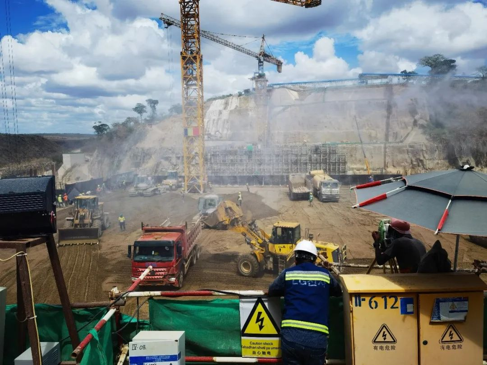
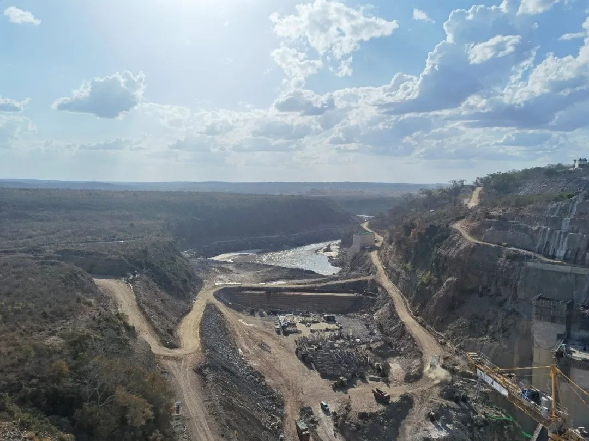
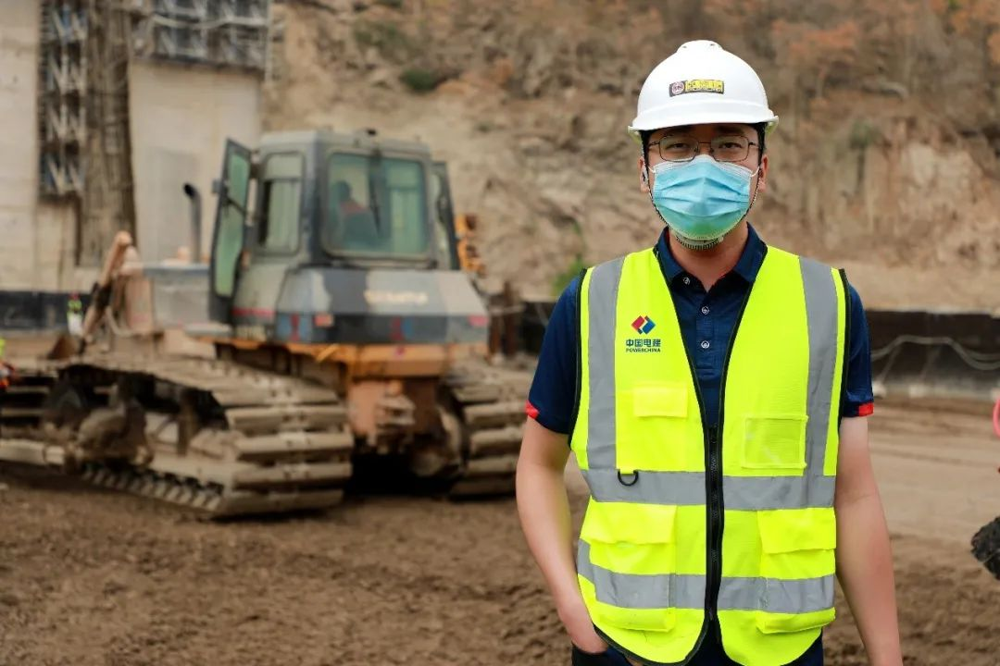

曹丰泽：我要证明，理想主义的路是走得通的
作者：曹丰泽 - 清华公众号
1
一转眼，来非洲已经快半年了。短短半年，我却扎扎实实地明白了“理想主义”这四个字究竟意味着什么。回想半年前，我兴高采烈地离开清华，怀抱着满腔热情来到非洲，一心想要为坦桑尼亚人民用上清洁而充沛的电力贡献我的“毕生所学”，给人类命运共同体添砖加瓦。我的想法非常简单：自我2012年考入清华，从本科到博士，我已经在北京市海淀区的这一片小小的方寸天地中耽搁了整整九年的青春，再不去风雨中闯闯，青春就要结束了。大丈夫生于天地之间，岂能郁郁久居五道口？我想要一个浪迹天涯的人生，到我死的前一天也断然不想定居下来。至于升官发财，那实在是次要得不能再次要的事情。我曾跟朋友们抱怨说，我就像一只被铁链子拴着的野狗，文凭就是拴着我的那条铁链子。等这条铁链子被我磨断的那天，你看我冲出去，就像《天狗》里的那条天狗，我把日也吞了，我把月也吞了，我就是我啊！
终于，那条铁链子断了，我如愿以偿地冲了出去。
2
我曾尽可能地想象了在非洲长期工作可能遇到的困难。什么吃得不好，住得不好，各种传染病，生活无聊，等等等等。但现实永远比我想象的更简单，也更真实：所有我想的这些，其实都没啥艰苦的，唯一的也是最令人头疼的艰苦，永远都是工作本身。
应当承认，我们干的确实是一份相当光荣的工作。 我们目前建设的水电站，建成后将成为撒哈拉以南的非洲最大的水电站。坦桑尼亚是一个很值得尊敬的国家，政局稳定，人们吃苦耐劳，且十分爱国，只是和其他亚非拉欠发达国家一样，长期受到不公正的国际秩序压制，难以汇聚财力进行工业化推进。为了建设这座水电站，坦桑尼亚政府倾尽全力，让坦桑尼亚的工业迈出从零到一的最艰难一步。作为一个中国人，我们也有过顶着全世界的敌对和打压奋勇前进的年代，看到此时此刻，恰如彼时彼刻，怎能不叫人热血沸腾。
只是到了具体工作时，画风就变得好像不是那么回事儿了。碾压混凝土仓面没有清理干净，需要安排人把之前没刷掉的塑料皮刷干净；排水管堵了需要通开；夜班卡车司机喝了酒要怎么处理；两列拉材料的火车同时到了，应该先拉水泥还是火山灰；廊道出了个裂缝，这个裂缝要不要紧？这个不要紧的话，那对面那个裂缝要不要紧？当然“大事”也有，比如为了钢筋保护层的厚度到底应该是5厘米还是10厘米，我们和监理单位扯了一周的皮，双方唇枪舌剑，连会议室桌子的螺丝都被拍松了。我们探索出了一百种委婉的说法，用来替代不够礼貌的“你在教我做事？”还有朋友问我在非洲寂不寂寞，笑死，我这觉都不够睡，哪有时间寂寞。
这还是理想主义吗？咱就不说理想了，所有这些工作，好像和任何一个“主义”都搭不上边。
持续上升中的大坝
3
理想主义者的生活从来都不酷，理想主义的道路也从来就不豪迈。
“但这正是理想主义，这才是理想主义！”
理想主义者的本质是一种人类，而不是神，不能用血肉之躯徒手搬起两座大山，一厝朔东，一厝雍南。
理想主义者在绝大多数的早晨醒来，需要面对的并不是“临危一死报君国”，也不是走到台上振臂一呼“不许跪”，而是谈判桌上永无休止的扯皮推诿，是繁杂琐碎的财务问题，是连篇累牍的制度设计，是与形形色色的人合作，斗争，再合作再斗争，是日复一日不见天日的思考与劳动，劳动与思考。
甚至，掰着手指头算日子，被动地熬过那些艰难的时光，也算不得什么本事。而是，在日复一日的艰辛与失败中，不停息地思考如何工作，如何解决现实中不停涌现的既不酷也不豪迈的千百万个问题，永不停息，这才是理想主义者。
非独贤者有是心也，人皆有之，贤者能勿丧耳。匹夫一怒，三分钟热血，谁人皆可，并不难，可也无用。真正难的，是“勿丧”，是坚持着把一件事做成，是让一切的付出和牺牲都有价值。
有点浪漫的事情，往往是快乐的。而特别的浪漫，往往意味着特别的艰辛。但也正是这种特别的艰辛，成就了特别的浪漫。
4
工业化是一个尴尬的过程。要想获得电，首先你需要有电。
在一个水电站工地，施工现场，材料加工，运输，个个都是时刻吞噬电力的无底洞。每一粒碎石到达它的指定位置，都至少要经历五只电老虎的嘴。甚至我们每一个中国人，按照坦桑尼亚的标准来看，个个都是行走的电老虎。我们随便开几天空调，就是一个坦桑人一年的用电量。
我的营地使用的，是坦桑尼亚原本就捉襟见肘的电力。停电是再正常不过的事情，每天都要来上个十次八次。开会时停电甚至不能打断发言者一秒钟的思路，否则如果每停一次电就要愣一会儿，那这会就永远开不完了。
要命的是，供应生活用水的水泵也是要用电的。有时洗碗洗到一半，洗澡洗到一半，水和电同时消失。束手无策，等吧。有时中国工长们疲惫地下了夜班，浑身机油，满脸水泥，发现没电，也没水。那就等等吧，等等也许就来了。
这已经是坦桑尼亚能给予我们最好的条件。
工业化是一个屈辱的过程。每次我全身涂满泡沫却突然停水时，我都忍不住在想，如果这座大坝不能顺利建成，我们这座工地外面上千万个坦桑尼亚人，那些住在草棚里没有电灯、没有井甚至没有玻璃的人，可能一辈子都没有机会知道被泡沫涂满全身是什么感觉。进而我就更忍不住去想，有的国家把国力透支到极限，挣扎着迈开苦难的第一步，有的国家却可以动动手指就割下全世界几万亿的劳动成果，让几亿人可以躺在24小时的17℃空调房里不劳而获，把玉米糖浆源源不断地抽吸到他们的胃里。
我回想起半年前的自己，龟缩在有层层叠叠文明屏障保护的温室中，会为了自己一点屁大的得失抱怨不休。在层层叠叠的现代科技的庇护下袖手空谈，是多么荒谬可笑的一件事。
工业化是一个荒唐的过程。要改变这套荒唐的秩序，需要的是钢铁一样的人们。
我希望这人们中能包括我。
2023年，我们目力所及之处将变成一片湖
5
有很多人劝我。他们说，我有“一手好牌”，没必要过这种身上涂满泡沫等水来的日子。
确实“没有必要”。但是，我那么努力地学习，考试，获得了这“一手好牌”，原本就是为了拥有更多的选择，而不是为了把路越走越窄，进而只能走那条对于个人利益的“最优路径”的。那样无趣而无光的生活，于我如炼狱。
既然我已经能够吃得饱，穿得暖，那么我想，我有权利把我多出来的精力，不用来吃得更饱，穿得更暖，而是做一些我认为更有意义的事情，走一条风景更加壮丽的路。
那就是理想主义的路。它或许比其他道路更崎岖，也更危险，但我坚信这绝非一条死路，它也是走得通的。
我想用我的经历，告诉那些同样怀有理想，拥有过人才能，但却被外界规训“世界上只有利己主义一条路走得通，别的路都是死路，所以你必须抛弃你的理想，走这条锱铢必较的利己主义道路”的青年们：
世界上不是只有利己主义一条路可以走。
理想主义的路，是走得通的。
2020年10月于朱利叶斯·尼雷尔大坝
按：下面是曹丰泽本人在知乎关于他的问题下的回答，他的知乎用户名为“伏罗希洛夫射手”。
在过去的24小时里：
到货850吨水泥，60吨火山灰，12万升柴油。上报了下半年科技立项。验收了边坡的地质夹层处理，一块消力池底板，还有一块准备验，这个过程中业主找了无数个麻烦。满管溜槽堵了三次，以前很少堵，频繁堵管怀疑是料的问题，但测了水泥没问题，缓凝剂也没问题，所以还要继续研究到底是啥问题，只要有问题就没问题，要是都没问题那问题就大了。本段仓号连续上升第43天，还要两三天左右，大家精力体力都到极限了，如果最终没有质量问题，必须发奖金。
显然，以上这么多工作不可能是我一个人干的，但我需要熟知所有这些工作的全过程。
我现在已经不羞于提及自己的理想主义。你问我，我会大大方方地承认。但如果让我说，我还是会去强调外派工作的高收入和提拔速度。因为身为一个理想主义者的最基本要求，就是必须意识到，靠理想主义是成不了事的。
原因再简单不过：事是需要人干的，而你浑身是铁也碾不了几根钉，要想成事，必须依靠绝大多数的打灰人，干饭人，日子人。理想是说给自己的，而没有资格强加给别人。这就像子贡赎奴，最简单的道理。
也正因为如此，理想主义者所面临的最多的，是谈判桌上漫无休止的扯皮推诿，是无比繁杂的财务管理，是连篇累牍的制度设计，而不是什么振臂一呼，天下云集响应。
我们都认可，一个好的世界，应当是为社会贡献最大的人收益最多，这样就可以鼓励那些最有才能的人主动去为社会做贡献。我们也都认可，当今的世界显然并不是这样，许多对社会无益甚至有害的人和行业却拥有最高的利润，这也是客观事实。
但我要说的并不是这个世界有多烂，恰恰相反。世界并没有烂到你幻想的那样，仍有许多人在为了它的逐渐变好而努力着，日积月累，也有不少的成效。这些成效你可能看不上眼，因为它们确实不能如你所愿地在一夜之间建成共产极乐，但每一个受它影响而变好的人都无法否认它们的存在。这些了不起的人其实也并没有多么“了不起”，他们中有高尚的共产主义战士，想为全球人类的解放而不屈战斗；有朴素的爱国者，想为国家的建设出力；有单纯的善人，想着能帮一个可怜人算一个；更多的则是标准的干饭人，心里只是希望老爹老妈，媳妇孩子能过上好日子。
他们的人格，你可以随意臧否，反正红口白牙虚空对虚空，谁的嗓门大谁就有理。
但他们的功绩，就和这座碾压混凝土重力坝一样。哪怕有导弹把它炸碎，它也仍然是一座山，拦着滔滔江水，护佑着万千人民。
大概清华园这片袖珍天地里，还有好多人同曾经的我一样，眼望他们各自的“非洲”，理想之心躁动不安。青年人理应如此，不必去等待炬火，有一份热，就发一份光。
最后，分享一首我很喜欢的歌。有几句歌词，简直神来之笔。
От чистого истока,В Прекрасное Далеко, 我就从零点起步，向最美好的前途，
В Прекрасное Далеко,Я начинаю путь. 向最美好的前途，那怕是漫长的路。
Слышу голос из Прекрасного Далека 有个声音来自最美好的远处，
Он зовет меня в прекрасные края 它在召唤我去奇妙国土。
Слышу голос голос спрашивает строго 我听见那声音向我严正发问
А сегодня что для завтра сделал я ? 我为明天尽些什么义务？
你将为明天尽些什么义务？